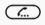

Find the right person – transfer calls correctly
If you pick up the phone and the call is best handled by someone else in The Charity, always speak to the person you’re transferring the call to before you pass the caller over.
This not only allows you to give your colleague a brief overview of what the call’s about, but also ensures that you don’t transfer a caller to someone who isn’t around to speak to them – or isn’t the best person to help.
SNOM 320 phones
- Put the caller on hold by pressing 
- Use the phone list to find the extension of the person or team you want to the transfer the call to and dial the number
- When the other team picks up the phone, give brief details about the caller, then press the transfer button () followed by the tick button to transfer the call. Hang up.
- If no one answers, press the button next to the blinking light to return to the original call. Take a message and ensure you pass it on the relevant team, via email, straight away.
Yealink phones
- Press the TRAN key
- Use the phone list to find the extension of the person or team you want to the transfer the call to and dial the number
- When the other team picks up the phone, give brief details about the caller, then press the TRAN key. Hang up.
- If no one answers, press the cancel key. Take a message and ensure you pass it on the relevant team, via email, straight away.
If display is showing letters instead of numbers, or vice versa
Press star (*) button on the phone and look at the display you should see a corresponding button to letters or numbers. If you press that you should see small letters showing on the left corner of the display and if you have numbers or capital letters just press button underneath till you see small letters and try any numbers you should then see the changes on display.